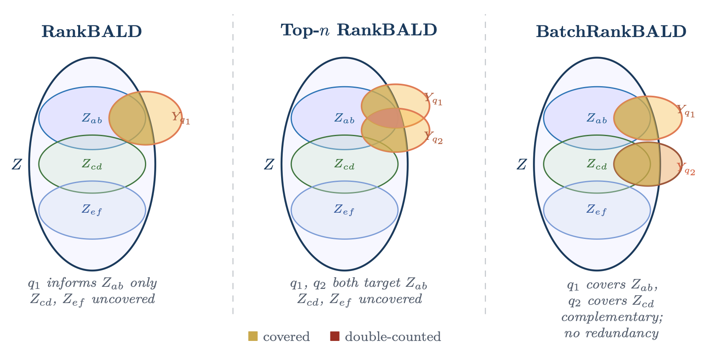

Batch active evaluation
Which questions belong in the same batch?
Adaptive evaluation is an experimental design problem. When the decision is which model to release, the evidence that matters is whatever can change the ordering. What happens when you have to choose all your tests before seeing any answers?
By Bonaventure F. P. Dossou · TMLR · November 2026
Design the experiment around the decision
Imagine I have to decide which checkpoint to release. I care about whether A outranks B, especially if the evidence so far puts them close together. An item that precisely locates a distant checkpoint on the ability scale may do little to inform that choice. In our RankBALD work, Jackie Cheung and I built the acquisition rule around those pairwise comparisons.
The batch setting changes when evidence arrives. Suppose I can launch ten benchmark items in parallel, with every item run on all candidate models. Sequential RankBALD would wait for answers after each item. Taking its ten highest scores up front uses the same initial belief every time. BatchRankBALD also commits up front, but asks what each item will teach us after accounting for the possible answers to the items already queued.
There are two kinds of interaction to look for. Several items can repeat evidence about a close pair, making each successive item less valuable. Or an answer can tell us when a second answer matters, making the second item more valuable. Both effects matter even if responses are independent once the underlying abilities are known.

Build your own evaluation batch
Pick questions to help settle five model comparisons. Watch how much each question adds as the batch fills. Here, questions about the same pair provide overlapping evidence.
Each question covers a fraction of one comparison. The next question covers that fraction of what remains. For example, two items covering 90% and 80% of the same comparison cover 98% together. This is a schematic model of overlap. The 2PL lab below computes mutual information from response probabilities.
Numbers on each unselected question show its individual coverage and what it would add to your current batch, in percentage points.
From an ability posterior to a batch objective
Under two-parameter logistic item response theory (2PL IRT), a model with ability \(\theta_k\) answers item \(j\) correctly with probability \(\sigma(a_j(\theta_k-b_j))\). The item parameters are \(a_j\), its discrimination, and \(b_j\), its difficulty. We hold them fixed while constructing a batch and use a Laplace approximation for each model’s current ability posterior.
Write \(D_t\) for the evaluation evidence already observed, \(Z_{ab}=\mathbf 1[\theta_a>\theta_b]\) for the ordering of models \(a,b\), and \(Y_{ab,j}=(U_{aj},U_{bj})\) for their two binary responses to item \(j\). The ideal design would choose the \(n\) items giving the most information about the entire ordering vector \(Z\).
The ordering bits are coupled by transitivity. If A outranks B and B outranks C, A outranks C too. Computing joint information and searching across size-\(n\) subsets are both expensive. The paper uses a weighted pairwise surrogate over the retained comparisons \(\mathcal P_t^\star\).
For each pair the chain rule gives the exact marginal of its term. In entropy form, it is the expected reduction in uncertainty about the ordering once we account for the answers from \(S\).
The implemented greedy score also uses \(v_{ab,j}=\omega_{ab}\bar\pi_{ja}^{\,t}\bar\pi_{jb}^{\,t}\), where \(\bar\pi_{jk}^{\,t}\) is the posterior average of a Gaussian kernel measuring how close \(b_j\) is to \(\theta_k\). The kernel bandwidth is the median posterior ability standard deviation across models.
The numerator and normalization change with the candidate, so the implemented score is a heuristic built from the pairwise marginals. With \(S=\varnothing\) the conditioning disappears. A batch of one with all pairs retained recovers sequential RankBALD.
When does an item become more useful?
Fix one pair and omit \(D_t\) for readability. Expanding \(I(Z;Y_i,Y_j)\) both ways gives the co-information identity in Appendix B.
Positive co-information gives redundancy. Negative co-information gives synergy. Conditional independence given \((\theta_a,\theta_b)\) does not force conditional independence given their ordering: knowing \(\theta_a>\theta_b\) still leaves uncertainty about both abilities. This is where the usual diminishing-returns argument for BatchBALD breaks. The paper gives a conditional guarantee for its pairwise surrogate using a submodularity ratio and the spread of the relevance weights. The standard \(1-1/e\) factor requires stronger assumptions.
Reproduce the 2PL counterexample
Take independent abilities \(\theta_a\in\{0,2\}\) and \(\theta_b\in\{-1,1\}\), each uniform. Item \(i\) has difficulty \(-0.5\), item \(j\) starts at \(1.5\), and both share discrimination \(\lambda\). The lab enumerates all four ability states and all 16 joint response histories to compute the information exactly for this discrete posterior.
At the Appendix C setting, information rises from 0.309553 to 0.475976 bits after conditioning.
In the steep-item limit at the Appendix C setting, let \(X=\mathbf 1[\theta_a=2]\) and \(W=\mathbf 1[\theta_b=1]\). Then \(Z=X\lor\neg W\). The easy item reveals \(W\); the hard item reveals \(X\). When \(W=0\), the ordering is settled. When \(W=1\), the hard item settles it. Averaging the two histories gives \(I(Z;Y_j\mid Y_i)=\tfrac12\) bit, compared with \(I(Z;Y_j)=h_2(1/4)-\tfrac12\approx0.3113\) bits.
Compute the gain before the answers arrive
For a single pair, each chosen item has four possible response outcomes, so exact averaging requires \(4^{|S|}\) histories. The paper uses two independent banks of posterior samples. An outer bank generates \(R\) plausible histories. Within a history, the same sampled abilities generate responses as new items are appended, preserving their dependence across items. An inner bank of \(L\) ability draws is reweighted by the probability of that history.
Normalize the weights within each history. For a candidate item \(j\), the resulting posterior predictive table has eight cells: two orderings times four response outcomes. Each cell is a weighted sum over the inner draws, with \(p_j(y\mid\theta^{(s)})\) the product of the two Bernoulli likelihoods.
This is an average of information scores computed within histories. Averaging the tables first would mix away the conditioning. Only the simulated histories change while selecting the batch. We update the actual evaluation posterior once the batch runs. Precomputing response probabilities and extending the log weights recursively yields \(O(n\,|Q|\,|\mathcal P_t^\star|\,R\,L)\) candidate-scoring work for a batch of \(n\) items, without enumerating histories.
How much does sampling change the choice? In the paper’s small reference experiment, we enumerated histories through depth four and used quadrature for the continuous ability integrals. With 64 outer and 64 inner draws, the candidate-score rankings had a mean Spearman correlation of 0.908 with the reference, but the top candidate agreed only 67.5% of the time. This matters when scores are close. An estimator can preserve most of the ranking while changing the next greedy choice.
What happened with ten questions?
We tested the methods on 2,802 checkpoint–benchmark combinations across six model families and six Open LLM Leaderboard benchmarks. With ten items per benchmark, BatchRankBALD reached a rank distance of 30.4, compared with 35.3 for sequential RankBALD and 84.4 for selecting the ten highest individual scores.
| Method | 10 items | 50 | 100 | 500 |
|---|---|---|---|---|
| Random batch | 66.2 | 45.8 | 42.1 | 36.6 |
| Top‑n RankBALD | 84.4 | 39.3 | 36.5 | 35.5 |
| Sequential RankBALD | 35.3 | 29.1 | 24.2 | 22.5 |
| BatchRankBALD | 30.4 | 27.1 | 21.1 | 18.9 |
At each budget in the main experiment, BatchRankBALD also had lower trajectory total variation and higher training-order rank correlation than the three baselines. The sequential comparison is against a specific one-step greedy rule that updates after every item. At ten items, random batching also beats top‑n on rank distance (66.2 versus 84.4). That result is consistent with top‑n concentrating on overlapping evidence, though the aggregate scores alone cannot identify which items were redundant.
A smoother trajectory can come with a worse ranking
In the ablation we fixed the total budget at 500 items and varied the number committed per batch. Relative to batch size 10, rank distance worsened significantly starting at 50, while trajectory total variation improved at every tested size from 20 upward and reached its minimum at 100. Larger batches mean fewer opportunities to redirect the experiment after seeing data. They can also make projected checkpoint trajectories smoother. Those metrics reward different outcomes.
Restricting attention to 20–50% of model pairs produced no statistically detectable change on the ablation metrics. Retaining 10% also preserved rank distance and total variation within the resolution of the experiment, but lowered rank correlation by 0.017 on average. In the AfroBench case study, the three methods tied on rank distance from 50 items onward. Only one of three model-family groups had enough models to form pairs, so that study says little about how much batch selection can gain from interactions across many comparisons.
What would the next question still teach us?
When the evaluation budget is tight, I want each slot to help resolve a comparison that the rest of the batch leaves uncertain. That is the question I would ask when choosing which benchmark items to run together. If the decision is whether a model meets a specific capability or language-coverage requirement, I would evaluate that requirement directly.